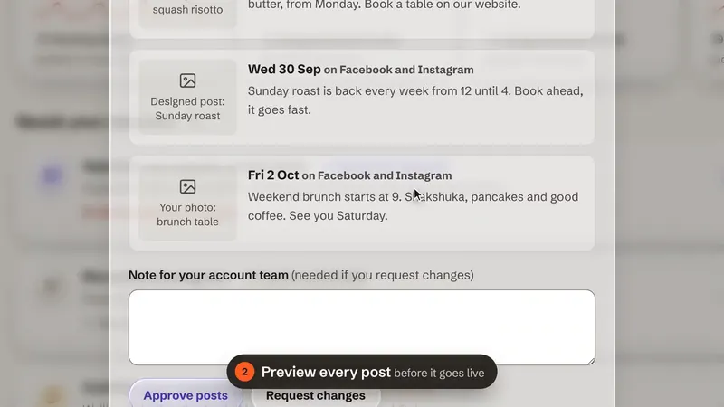
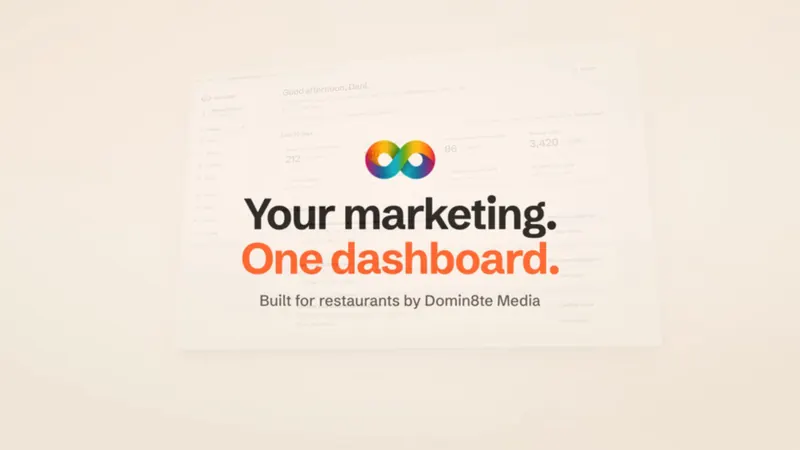
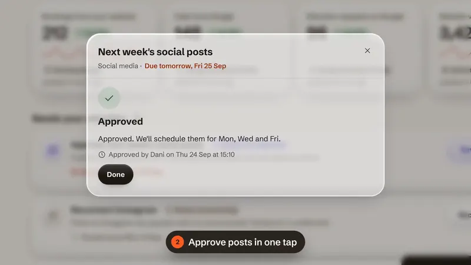
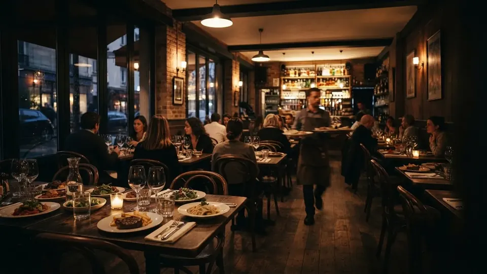
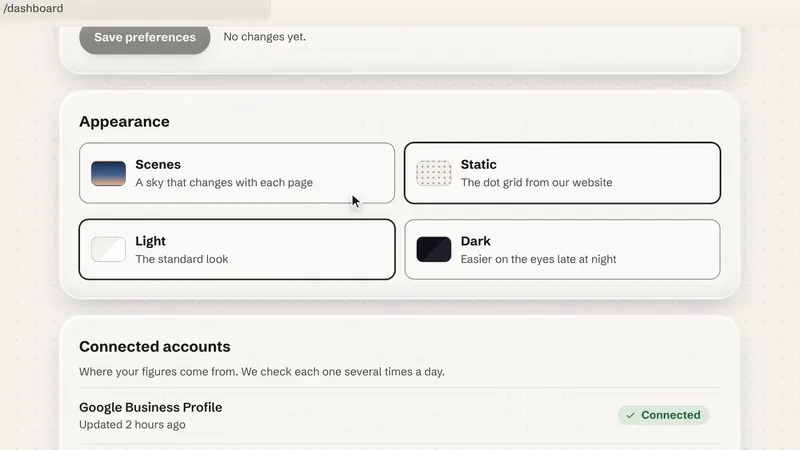

Domin8te Media
Domin8te MediaFive ways to put the dashboard first
Layout drafts for the next version of domin8temedia.com. Each one tells the same story (what we run for restaurants, and the client dashboard that makes it different) and ends on the full film and the lead form.

Open1. Night Service
The live dark editorial site, evolved. The cloche film opens; a sticky dashboard tour sits at its heart.

Open2. Daylight
A light product launch in the dashboard's own colours. Tilt-to-flat hero, bento, one switch to dark.

Open3. Control Room
The product is the hero. Hotspots, a pinned twelve-screen tour, alerts, a hover index of every clip.

Open4. A Week at Bayleaf
An editorial story: one restaurant's week in the dashboard, Monday to Sunday.

Open5. Explore It
Hands-on: the hero is a clickable dashboard explorer, and the page borrows the dashboard's appearance settings.
Local drafts only, not live. The dashboard footage is the demo account with sample figures. Brief and media notes: BRIEF.md in this folder.